Mixture of Experts
How to build a model with 140 billion parameters that costs the same to run as a 14 billion parameter model. The architecture behind Mixtral, DeepSeek, and GPT-4.

The Core Idea
The most important insight behind MoE fits in one sentence: not every input needs every parameter.
A standard neural network applies all its weights to every input. A 70B dense model runs 70 billion multiply-adds for every single token. A MoE model instead partitions its FFN parameters into E independent "expert" subnetworks and, for each token, activates only a small subset — typically 2 out of 8. Same inference FLOP as a ~17B dense model, but 8× more parameters (and therefore 8× more stored knowledge).
Dense model: 70B parameters × 100% activated = 70B FLOPs per token. Every expert for every token — guaranteed quality, high compute cost.
MoE model: 140B total parameters × 12.5% activated (2 of 16 experts) = ~17B effective FLOPs per token. 2× more knowledge, same compute. The catch: which expert to activate for which token must be learned.
The Human Analogy
Think of a hospital. A patient arrives with a heart condition. The hospital doesn't consult every specialist simultaneously — the cardiologist, the radiologist, and the surgical team are activated. The dermatologist and the pediatric oncologist are not. The total institutional knowledge is vast, but each case activates only the relevant experts.
For language: a token about quantum mechanics routes to "physics" experts; a Python code token routes to "programming" experts. The model learns this routing — not by explicit labeling but entirely through gradient descent on the task objective.
Parameters vs FLOPs: Two Axes of Scale
Dense scaling conflates two things that MoE separates:
More parameters = more facts memorized, more patterns stored, more languages and domains handled. Scales well with dataset size. MoE lets you scale this cheaply — adding experts is relatively cheap in memory-per-parameter.
More active FLOPs = richer per-token processing. You always need enough FLOPs to reason well. MoE keeps active FLOPs fixed while expanding knowledge capacity. This is the key insight: the two axes scale differently.
History
MoE is not a 2023 invention. The core idea is over 30 years old. What changed is scale, hardware, and the realization that sparsity is essential.
Architecture — Dense FFN vs MoE Layer
MoE only changes one thing in the standard transformer: the feed-forward network (FFN) layer. Everything else — attention, layer norms, residual connections, tokenization — stays identical.
Standard Transformer FFN (what you have now)
In a standard transformer, every FFN layer has two weight matrices: W1 ∈ ℝd×dff and W2 ∈ ℝdff×d where dff = 4d typically.
MoE Layer (the replacement)
Replace the single FFN with E identical-architecture FFNs (the "experts"), plus a small router network.
The Key Numbers
| Total params | E × (2d × d_ff) | E times more than dense. A 7B dense FFN becomes 56B with E=8. But only 2 experts activate per token. |
| Active params/token | K × (2d × d_ff) | K/E fraction of parameters activated. K=2, E=8 → 25% active. Same FLOPs as a 2× smaller dense model. |
| Router params | d × E | Tiny. For d=4096, E=8: 32,768 params vs billions in the experts. Routing cost is negligible. |
| Memory (inference) | All E experts | Must load all experts into memory even though only K activate. Memory cost = full model. Compute cost = K/E fraction. |
The Router — How Experts Are Selected
The router is the brain of a MoE model. It is a tiny linear layer (d → E parameters) trained end-to-end with the rest of the model. At inference, it produces one score per expert and selects the top K.
Step-by-Step Routing for One Token
Expert Choice Routing (alternative)
Standard top-K routing lets tokens choose experts. Expert Choice routing (Zhou et al., 2022) inverts this: each expert picks its top-C tokens from the batch. This guarantees perfect load balance by design — every expert processes exactly C tokens. The downside: a token might not be selected by any expert, requiring a pass-through with just the residual.
Token choice (standard): Each token picks its top-K experts. Popular experts become overloaded. Load imbalance is the main training challenge. Requires auxiliary loss to fix.
Expert choice: Each expert picks its top-C tokens. Perfect balance guaranteed. Some tokens skipped. More complex gradient flow. Used in Gemini and some recent models.
Load Balancing — The Central Training Challenge
Without explicit regularization, MoE training collapses: a few popular experts attract all the tokens, get the most gradient signal, improve the most, attract even more tokens. This positive feedback loop — the Matthew effect — leads to expert collapse within the first few thousand steps.
The Auxiliary Load Balancing Loss
The Switch Transformer introduced the standard fix. Let fi = fraction of tokens routed to expert i in the batch, and Pi = mean router probability assigned to expert i. The auxiliary loss penalizes uneven distributions:
Two signals penalized simultaneously: fi is based on hard routing decisions (non-differentiable), Pi is differentiable through the softmax. The product connects a gradient path to the otherwise hard routing decision.
Expert Capacity
A second mechanism: each expert has a fixed capacity — the maximum tokens it can process per batch.
If more tokens are routed to an expert than its capacity allows, the excess tokens are dropped — they pass through via the residual connection without any expert processing. This adds a small error but prevents any single expert from becoming a bottleneck. Monitoring the "overflow rate" (fraction of dropped tokens) is a key training health metric.
Healthy MoE training: overflow < 1–2% of tokens. Overflow > 5% means the auxiliary loss weight α is too low — increase it. Overflow = 0 with a very high α means the auxiliary loss is dominating the task objective — the router becomes "random" and experts can't specialize. Tune α carefully.
DeepSeek's Device-Level Balancing
Standard auxiliary loss balances experts globally. But if 8 experts run on 8 different GPUs, what matters for efficiency is that each GPU has roughly equal work. DeepSeek-V3 adds a device-level auxiliary loss that balances token counts per device, not just per expert. This prevents communication bottlenecks in distributed training even when global expert balance looks good.
Key Models — The MoE Taxonomy
| Model | Year | Total Params | Active/Token | Experts | K | Key Innovation |
|---|---|---|---|---|---|---|
| Switch Transformer | 2021 | 1.6T | ~7B | 2048 | 1 | Top-1 routing, capacity factor, T5-based |
| GLaM | 2021 | 1.2T | 143B | 64 | 2 | Decoder-only at scale; 3× cheaper than GPT-3 |
| ST-MoE | 2022 | 269B | 32B | 32 | 1 | Stable MoE training; encoder+decoder |
| Mixtral 8x7B | 2023 | 46.7B | 12.9B | 8 | 2 | Open weights, outperforms LLaMA-2 70B |
| Mixtral 8x22B | 2024 | 141B | 39B | 8 | 2 | Stronger open MoE, instruction-tuned variants |
| Grok-1 | 2024 | 314B | 86B | 8 | 2 | Open weights, xAI; MoE with standard architecture |
| DBRX | 2024 | 132B | 36B | 16 | 4 | 16 experts, 4 active; more routing flexibility |
| DeepSeek-MoE | 2024 | 145B | 22B | 160 | 6 | Fine-grained experts + shared experts |
| DeepSeek-V3 | 2024 | 671B | 37B | 256 | 8 | State-of-art; Multi-head Latent Attention + MoE |
| OLMoE-1B-7B | 2024 | 6.9B | 1B | 64 | 8 | Open-source, fully transparent training |
Three Architectural Families
E experts, K activated. K=1 (Switch) or K=2 (Mixtral). Large experts with full d_ff. Simple to implement, good baseline. Prone to load imbalance when K=1.
Many small experts (E=64–256) with reduced d_ff. Router has more flexibility — can combine many smaller specialists. Better coverage of input diversity. DeepSeek-MoE adds shared experts on top.
Shared experts (always active) + routed experts (top-K). Shared experts capture universal knowledge; routed experts capture specialized patterns. Also combines with Multi-head Latent Attention for attention efficiency.
DeepSeek-MoE: Fine-Grained + Shared Experts
DeepSeek's key innovations deserve detail. Instead of 8 large experts, they use 64 small experts with d_ff = d_ff_dense / 8. Plus 2 "shared" experts that always activate regardless of routing. The objective:
Why fine-grained helps: With 8 large experts, each token gets 2 experts = 25% of FFN capacity. With 64 small experts (each 1/8 the size), selecting K=6 gives 6/64 = 9.4% — but more flexibly combined from a richer set of specialists. The router can pick the precise combination of micro-specialties needed.
Expert Specialization — What Do Experts Actually Learn?
Does routing create genuine specialization, or is it arbitrary? Research consistently shows: yes, experts develop meaningful semantic specializations — even though no labels or explicit objectives guide this.
What Specialization Has Been Observed
Domain specialization
Different experts handle different knowledge domains. Analysis of Mixtral routing shows distinct clusters: science/mathematics tokens, code/programming tokens, multilingual tokens, and general language tokens each tend toward different experts.
Syntactic specialization
Some experts handle punctuation, structural tokens, and formatting. Others handle content words. Common function words (the, of, and) often route to a shared "syntax" expert.
Position specialization
Early tokens in a sequence and late tokens can route to different experts. Some experts specialize in context-setting (beginning of sentence); others in consequence/conclusion tokens.
Frequency specialization
High-frequency tokens (common words) often route to a small set of generalist experts. Low-frequency tokens (specialized terms) route to more diverse, narrower experts. This mirrors how information is distributed in language.
Initially all experts are identical (random init). The router is also random. As training proceeds, expert 1 might handle a slightly better version of "output operations" by random chance. The router learns to route those tokens there. Expert 1 receives more gradient from output examples, becoming even better at them. Other experts, freed from output tokens, specialize elsewhere. Positive feedback creates stable specialization within thousands of steps — entirely without supervision.
Training Challenges
1. Instability and the Router Cold Start
Early in training, the router is undertrained. It routes randomly, which means expert outputs have high variance. Two mitigations used in practice:
Adds a penalty on the magnitude of router logits: L_z = (1/B)Σ_x (log Σ_e exp(s_e(x)))². Prevents logits from becoming very large or small, keeping gradients stable through the router early in training.
During training, randomly drop entire expert outputs (set to zero before adding to residual). Forces the model to not over-rely on any single expert. Analogous to standard dropout but at the expert level. Rates: 0.1–0.4.
2. Expert Collapse
Even with auxiliary loss, expert collapse can happen. Signs: some experts have near-zero utilization after 10k+ steps. Causes: learning rate too high (router commits too early), auxiliary loss coefficient too low, or experts initialized identically (router has no initial preference to exploit).
Fix: Initialize expert weights with small noise (not identically). Use different random seeds per expert for the first few layers. This breaks symmetry and gives the router something to differentiate on.
3. Gradient Imbalance
Experts that receive more tokens get more gradient signal and train faster. This compounds the load imbalance problem — experts that happen to get more tokens early continue to attract them. The auxiliary loss mitigates but doesn't eliminate this. At very large batch sizes, even small imbalances in fi compound significantly.
4. Communication Overhead in Distributed Training
In expert parallelism, different experts live on different GPUs. Routing a token to an expert on a different GPU requires all-to-all communication — every GPU sends some tokens to every other GPU. At scale, this communication becomes a significant overhead.
DeepSeek addresses this with expert grouping: ensure experts are grouped so that popular token types route to experts on the same GPU (group intra-GPU experts). Also: limit K to prevent communication from dominating.
Full Training Recipe
from transformers import MixtralConfig, MixtralForCausalLM
import torch
# ── MoE Configuration ──────────────────────────────────────────────────────
config = MixtralConfig(
num_local_experts=8, # E: total experts per layer
num_experts_per_tok=2, # K: experts activated per token
router_aux_loss_coef=0.02, # alpha: auxiliary loss weight
hidden_size=4096, # d: model dimension
intermediate_size=14336, # d_ff: expert FFN hidden dim
num_hidden_layers=32,
num_attention_heads=32,
)
# ── Loss Computation ────────────────────────────────────────────────────────
def compute_moe_loss(model_output):
"""Total loss = task loss + auxiliary balancing loss."""
task_loss = model_output.loss
# Collect auxiliary losses from all MoE layers
aux_losses = []
for layer in model.model.layers:
if hasattr(layer, 'block_sparse_moe'):
router_logits = layer.block_sparse_moe.router_logits # (seq_len, E)
# f_i: fraction of tokens routed to expert i
routing_weights = torch.softmax(router_logits, dim=-1)
_, selected = torch.topk(router_logits, k=config.num_experts_per_tok)
tokens_per_expert = torch.zeros(config.num_local_experts)
for expert_idx in range(config.num_local_experts):
tokens_per_expert[expert_idx] = (selected == expert_idx).sum().float()
f_i = tokens_per_expert / tokens_per_expert.sum() # normalize
# P_i: mean router probability for expert i
P_i = routing_weights.mean(dim=0) # (E,)
# Auxiliary loss: E × Σ f_i × P_i (minimized at uniform distribution)
aux_loss = config.num_local_experts * (f_i * P_i).sum()
aux_losses.append(aux_loss)
total_aux = config.router_aux_loss_coef * sum(aux_losses)
return task_loss + total_aux
# ── Monitoring ──────────────────────────────────────────────────────────────
def log_routing_stats(router_logits, step):
"""Track expert utilization — critical for diagnosing MoE health."""
_, selected = torch.topk(router_logits, k=2)
counts = torch.zeros(8)
for e in range(8):
counts[e] = (selected == e).float().mean()
print(f"Step {step} | Expert utilization: {counts.tolist()}")
print(f" Max/min ratio: {counts.max()/counts.min():.2f}x "
f"(healthy: <3x, concerning: >10x)")
# Overflow rate: tokens dropped due to capacity limits
overflow = getattr(model, '_last_overflow_rate', 0)
print(f" Overflow rate: {overflow:.1%} (healthy: <2%, problem: >5%)")
Inference — The Memory–Compute Trade-off
MoE models have a fundamental inference challenge: all expert weights must live in memory even though only K/E are used per token. You pay full memory cost for the parameter advantage, but only partial compute cost.
Memory vs Compute
| Model | Memory (FP16) | Active FLOPs/token | KV cache | Throughput vs dense-equivalent |
|---|---|---|---|---|
| Dense 7B | ~14 GB | 7B | small | baseline |
| Mixtral 8x7B | ~87 GB (all experts) | 12.9B | same | ~3-4× higher throughput at same latency |
| Dense 70B | ~140 GB | 70B | large | baseline |
| DeepSeek-V3 (671B) | ~1.3 TB (all experts) | 37B | compressed (MLA) | ~5-8× higher throughput than dense-70B |
Single GPU: Mixtral 8x7B requires ~87GB — needs 2×A100 (80GB) or offloading. For a 4-bit quantized model, ~23GB — fits on a single A100. Quantization hits MoE especially hard because expert weights are accessed sparsely, making weight-caching less effective.
Speculative decoding: Works well for MoE because the routing decisions are often consistent across tokens, allowing the small draft model to predict routing in advance.
Expert offloading: For very large MoE models, keep only the K active experts in GPU memory, offloading the rest to CPU. Adds latency on expert swaps but makes 671B models runnable on smaller hardware. DeepSeek uses this in inference services.
Batch Size and Throughput
MoE models benefit disproportionately from larger batch sizes. When batch = 1 (chat), each expert processes at most a handful of tokens — very inefficient. When batch = 512 (serving), each expert processes many tokens in parallel. The K/E throughput advantage is fully realized only at large batch sizes. For interactive applications, MoE is less efficient than its FLOP numbers suggest.
MoE and Post-Training RL
This is where the RL guides and MoE connect. The same PPO/GRPO algorithms apply to MoE models, but there are specific complications.
The Routing Instability Problem in GRPO
Recall from the Beyond PPO guide: GRPO's probability ratio is computed at the token level:
For a dense model, this ratio is stable across PPO epochs — the same weights produce the same logits for the same input. For a MoE model, this ratio has an additional source of variance: routing decisions can change between the numerator and denominator evaluations.
When πθ and πold route a token to different experts, the numerator and denominator compute through different parameter subsets. The probability ratio can be large even when the intended "change in probability" is small. This is why GSPO was invented.
GSPO was explicitly motivated by MoE instability. DeepSeek uses it internally for their MoE models. The sequence-level ratio dilutes the noise from individual token routing mismatches. For a 671B MoE model where small routing changes cause large individual token ratios, GSPO is not optional — it's what makes GRPO-style RL stable on MoE architectures.
Expert Load Balance During RL
A second MoE-specific challenge during RL training: the policy update can shift the input distribution enough that the routing balance, carefully tuned during pre-training, breaks. Experts that were balanced during pre-training may become unbalanced after 1000 RL steps because the policy now generates different token distributions.
Fix: Keep the auxiliary load-balancing loss active during RL training. Use a lower coefficient than pre-training (α = 0.001–0.005 vs 0.01–0.02 during pre-training). Occasionally monitor expert utilization during RL and reset the router if collapse occurs.
Knowledge Retention and Expert Forgetting
MoE experts are less likely to suffer from catastrophic forgetting during RL compared to dense models. Because each expert specializes in a subset of the input space, a gradient update on "LLM-specific" tokens mainly updates the relevant domain experts — not the language, math, or code experts. This is a practical benefit: MoE models tend to retain broader capabilities better during task-specific RL fine-tuning.
MoE for text Generation
A MoE architecture is a natural fit for a multimodal LLM. response sequences have distinctly different token types that benefit from different processing strategies.
Why MoE Suits text Specifically
response sequences mix: operation tokens (query, read_doc, citation), numeric parameters (h=20, r=3.5), entity IDs (query_0, source_4), structural tokens (; , ( )), and coordinate/output values. These require fundamentally different processing — ideal for specialization.
A language model for mechanical parts doesn't need its "organic shape" or "textile" knowledge for every token. MoE allows those experts to exist (for generalization) without paying their compute cost on every forward pass.
Suggested Expert Configuration for a text MoE
| Expert Group | Specializes in | Example tokens | Why separate |
|---|---|---|---|
| E1–E2 Output ops | Shape construction operations | query, read_doc, revolve, loft, sweep | Different spatial reasoning from parameters |
| E3–E4 Finishing ops | Detail/tolerance operations | citation, check_answer, draft, shell | Different from primary construction; tolerance-aware |
| E5 Numerics | Semantic parameter values | h=20, r=3.5, d=1, w=40 | Dense numeric reasoning; different from operation routing |
| E6 References | Entity identifiers | query_0, source_4, face_2, result_0 | Requires tracking entity state across sequence |
| E7 Boolean/Assembly | Multi-body operations | boolean_subtract, union, mirror, pattern | Different topology reasoning from single-body ops |
| E8 Structure | Syntax and sequence | ; , ( ) = TAB EOL | Pure syntax; different from semantic ops |
MoE + GRPO/DAPO for text
Combining MoE with the RL training pipeline from the previous guides:
For your LLM: start with a dense SFT baseline, get RL working with DAPO/GRPO, then migrate to MoE. Don't start with MoE — the additional debugging complexity (routing, load balance, overflow) on top of RL training is overwhelming. Once RL is stable, MoE gives you 2–3× parameter capacity at the same inference cost, which translates directly to better answer accuracy on complex multi-body assemblies.
References
- Jacobs, R.A., Jordan, M.I., Nowlan, S.J., & Hinton, G.E. (1991). Adaptive Mixtures of Local Experts. Neural Computation. doi:10.1162/neco.1991.3.1.79
- Shazeer, N. et al. (2017). Outrageously Large Neural Networks: The Sparsely-Gated Mixture-of-Experts Layer. ICLR 2017. arXiv:1701.06538
- Fedus, W., Zoph, B., & Shazeer, N. (2021). Switch Transformers: Scaling to Trillion Parameter Models with Simple and Efficient Sparsity. JMLR 2022. arXiv:2101.03961
- Du, N. et al. (2021). GLaM: Efficient Scaling of Language Models with Mixture-of-Experts. ICML 2022. arXiv:2112.06905
- Zoph, B. et al. (2022). ST-MoE: Designing Stable and Transferable Sparse Expert Models. arXiv:2202.08906
- Zhou, Y. et al. (2022). Mixture-of-Experts with Expert Choice Routing. NeurIPS 2022. arXiv:2202.09368
- Jiang, A.Q. et al. (2024). Mixtral of Experts. arXiv:2401.04088
- Dai, D. et al. (2024). DeepSeekMoE: Towards Ultimate Expert Specialization in Mixture-of-Experts Language Models. arXiv:2401.06066
- DeepSeek-AI (2024). DeepSeek-V3 Technical Report. arXiv:2412.19437
- Muennighoff, N. et al. (2024). OLMoE: Open Mixture-of-Experts Language Models. arXiv:2409.02060
- Zheng, C. et al. (2025). GSPO: Group Sequence Policy Optimization. arXiv:2507.18071 (MoE instability motivation)